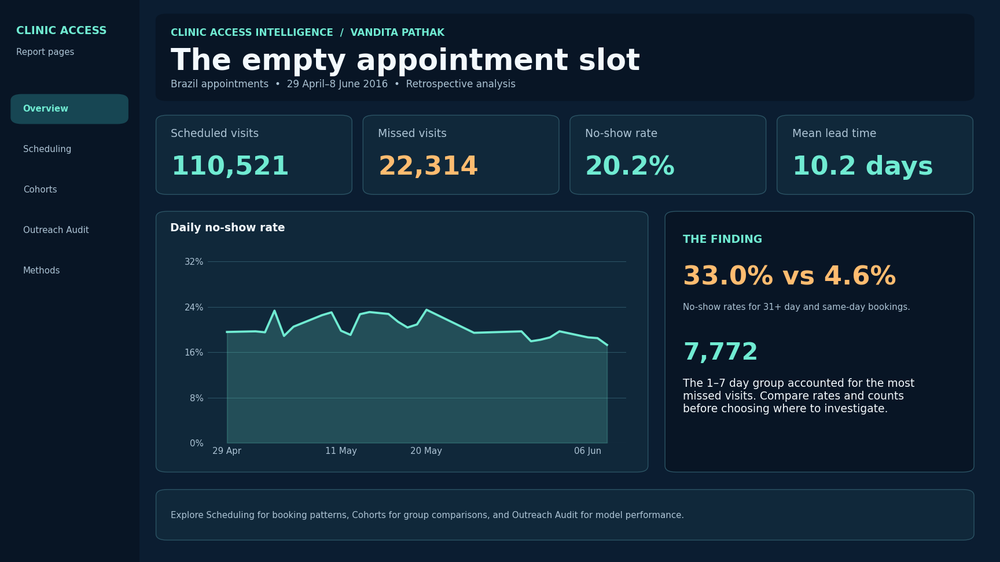

01 / Prepare
Cleaned appointment data and excluded six invalid records. Used SQL to create daily counts by lead-time and demographic group.
HEALTHCARE ANALYTICS CASE STUDY
Where do missed appointments pile up, and who gets overlooked when a clinic has limited time to follow up?
SCHEDULING ANALYSIS
Compare the likelihood of a no-show with the actual number of missed visits. The two measures point to different booking groups.
JUNE HOLDOUT / OUTREACH AUDIT
Replay a limited review queue on 26,450 held-out appointments. Compare logistic regression with a baseline that ranks bookings by historical no-show rates for each lead-time band.
POWER BI REPORT
Five pages from executive overview to cohort analysis and model validation, with a dimensional model behind the visuals.

RESEARCH NOTES
Cleaned appointment data and excluded six invalid records. Used SQL to create daily counts by lead-time and demographic group.
Built a Power Query import and four one-to-many dimension relationships. Added DAX measures for booking volume, no-show rates and cohort comparisons.
Trained on April–May appointments and tested on 1–8 June. Reviewed missed-visit detection at a fixed budget, then checked subgroup coverage.
Retrospective analysis of one appointment dataset. Associations do not establish causes, and the audit measures ranking performance rather than the effect of outreach. Appointment source ↗